ETC5523: Communicating with Data
Effective data visualisation
Lecturer: Michael Lydeamore
Department of Econometrics and Business Statistics
Aim
- Apply principles and practices for data visualisation that effectively and efficiently convey intended messages to viewers
- Use data visualisation to create effective data stories
Why
- “A picture is worth a thousand words”.
- Data visualisation can make large, complex data more accessible, understandable and usable.
Data Visualisation
Data visualization is part art and part science. The challenge is to get the art right without getting the science wrong and vice versa.
– Claus O. Wilke, Fundamentals of Data Visualization
Role
- A data visualization has to accurately communicate the data to the intended audience.
- A data visualization must not mislead or distort information from the data.
💬️ Communicating with data visualisation
Communication
Effective data visualisation means to design your data plot to effectively use human visual system to improve cognition about a targeted information from the data.
- I interchangeably use the terms data visualisation, plot, data plot, graphic, statistical graphic, and figure.
Birth place from the 2021 Australian Census
| Birth place | Count | % |
|---|---|---|
| Australia | 17,020,422 | 66.9 |
| Not Stated | 1,358,658 | 5.3 |
| England | 927,490 | 3.6 |
| Other | 759,173 | 3.0 |
| India | 673,352 | 2.6 |
| China | 549,618 | 2.2 |
| New Zealand | 530,492 | 2.1 |
| Philippines | 293,892 | 1.2 |
| Vietnam | 257,997 | 1.0 |
| South Africa | 189,207 | 0.7 |
| Malaysia | 165,616 | 0.7 |
| Italy | 163,326 | 0.6 |
| Sri Lanka | 131,904 | 0.5 |
| Nepal | 122,506 | 0.5 |
| Scotland | 118,496 | 0.5 |
| Korea South | 102,092 | 0.4 |
| United States America | 101,309 | 0.4 |
| Germany | 101,255 | 0.4 |
| Hong Kong | 100,148 | 0.4 |
| Iraq | 92,922 | 0.4 |
| Greece | 92,314 | 0.4 |
| Pakistan | 89,633 | 0.4 |
| Lebanon | 87,340 | 0.3 |
| Indonesia | 87,075 | 0.3 |
| Thailand | 83,779 | 0.3 |
| Ireland | 80,927 | 0.3 |
| Iran | 70,899 | 0.3 |
| Fiji | 68,947 | 0.3 |
| Netherlands | 66,481 | 0.3 |
| Singapore | 61,056 | 0.2 |
| Afghanistan | 59,797 | 0.2 |
| Bangladesh | 51,491 | 0.2 |
| Canada | 50,223 | 0.2 |
| Taiwan | 49,511 | 0.2 |
| Brazil | 46,720 | 0.2 |
| Poland | 45,884 | 0.2 |
| Japan | 45,267 | 0.2 |
| Croatia | 43,302 | 0.2 |
| Egypt | 43,213 | 0.2 |
| North Macedonia | 41,786 | 0.2 |
| Zimbabwe | 39,714 | 0.2 |
| Myanmar | 39,171 | 0.2 |
| Cambodia | 39,043 | 0.2 |
| Turkey | 38,568 | 0.2 |
| France | 36,019 | 0.1 |
| Malta | 35,413 | 0.1 |
| Papua New Guinea | 29,984 | 0.1 |
| Chile | 29,860 | 0.1 |
| Wales | 29,250 | 0.1 |
| Samoa | 28,107 | 0.1 |
| Bosnia Herzegov | 26,171 | 0.1 |
| Mauritius | 25,981 | 0.1 |
Birth place from the 2021 Australian Census
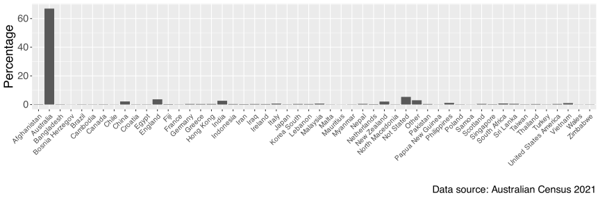Which birth place is the third largest among people in Australia?
Birth place from the 2021 Australian Census
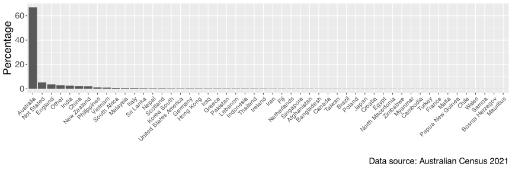Can you read the labels without tilting your head?
Birth place from the 2021 Australian Census
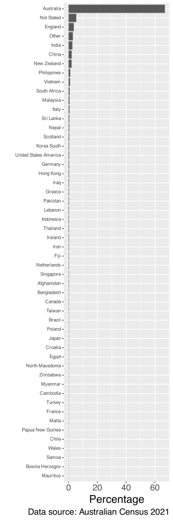What’s the data story?
India now third most common place of birth of Australian residents, census results show
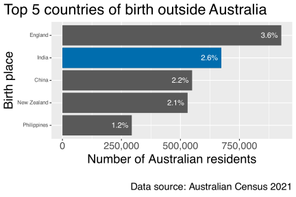
The text on the bar shows the percentage out of 25,422,788 Australian residents born in that place.
There were 5.3% of Australian residents who did not state their birth place.
The top country of birth place is Australia with 66.9% of Australian residents born in Australia.
Story from The Guardian.
Another look
Data Story
India has overtaken China and New Zealand to become the third largest country of birth for Australian residents, 2021 census data has found.
| Birth place | Count | % | Census Year |
|---|---|---|---|
| England | 907,570 | 3.9 | 2016 |
| New Zealand | 518,466 | 2.2 | 2016 |
| China | 509,555 | 2.2 | 2016 |
| India | 455,389 | 1.9 | 2016 |
| Philippines | 232,386 | 1.0 | 2016 |
| England | 927,490 | 3.6 | 2021 |
| India | 673,352 | 2.6 | 2021 |
| China | 549,618 | 2.2 | 2021 |
| New Zealand | 530,492 | 2.1 | 2021 |
| Philippines | 293,892 | 1.2 | 2021 |
India has overtaken China and New Zealand to become the third largest country of birth for Australian residents, 2021 census data has found
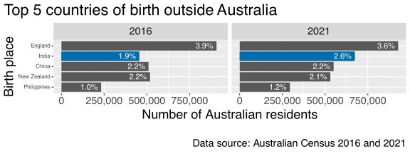Does this show that India overtook China and New Zealand?
India has overtaken China and New Zealand to become the third largest country of birth for Australian residents, 2021 census data has found
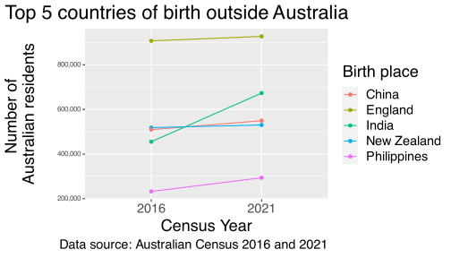Should we show percentage instead of counts?
India has overtaken China and New Zealand to become the third largest country of birth for Australian residents, 2021 census data has found
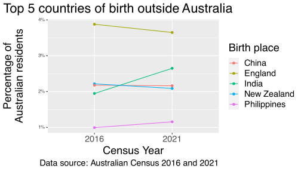The legend and the line order is different…
India has overtaken China and New Zealand to become the third largest country of birth for Australian residents, 2021 census data has found
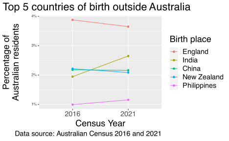Maybe we can put the labels directly in the plot?
India has overtaken China and New Zealand to become the third largest country of birth for Australian residents, 2021 census data has found
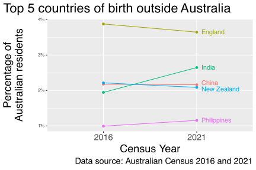What plot type to use?
🛒 Data Visualisation Catalogue
Non-exhaustive
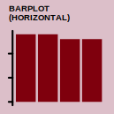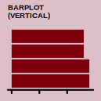 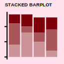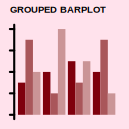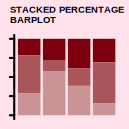
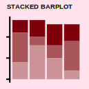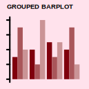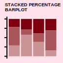
 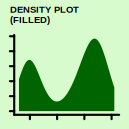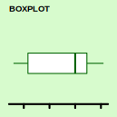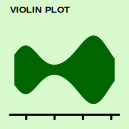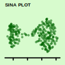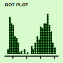
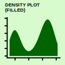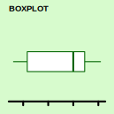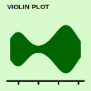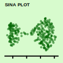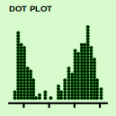
 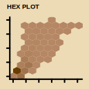
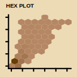 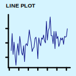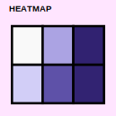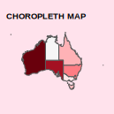
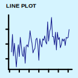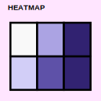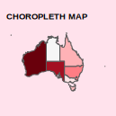
Composite plots
- Your data plot may be made from multiple plot types:
Composite plots
- Your data plot may be composed of multiple subplots:
Why is a 3D pie chart considered a “bad plot”?
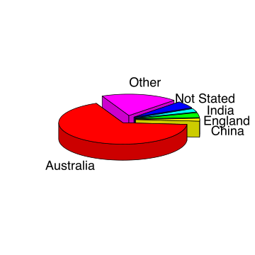What about 2D pie charts?
Pie charts are a very bad way of displaying information. The eye is good at judging linear measures and bad at judging relative areas. A bar chart or dot chart is a preferable way of displaying this type of data.
- This comes from empirical research of Cleveland & McGill (1984) among others.
Elementary Perceptual Tasks
Non-exhaustive


 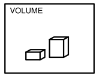
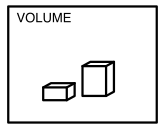 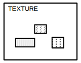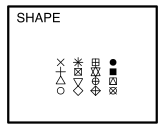
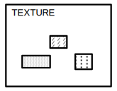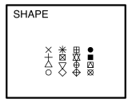
 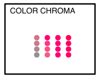
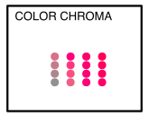
 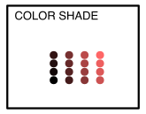
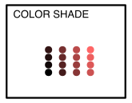
Retrieving information from graphs
Of the 10 elementary perception tasks, Cleveland & McGill (1984) found the accuracy ranked as follows…
Rank 1
Example
Rank 2
Example
Rank 3
Example
Rank 4
Example
Rank 5
Example

Rank 6
Example
Preattentive processing
- Viewers can notice certain features are absent or present without focussing their attention on particular regions.
- Which plot helps you to distinguish the data points?
Gestalt Principles
- “Gestalt” is German for form or shape.
- A set of laws to address the natural compulsion to find order in disorder by perceiving a series of individual elements as a whole.
Law of Proximity
- By placing elements closer together, it makes it easier for you to group elements together as well as make comparisons.
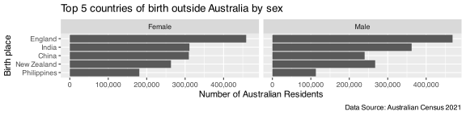
Can you tell which birth place have more women than men amongst the Australian residents?
Law of Proximity
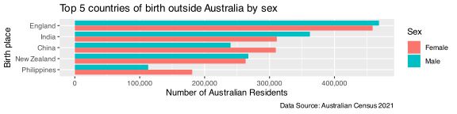Data story
Census 2021 shows far more women born in Phillipines and China migrate to Australia than men born in their respective countries, whilst more men born in India migrate to Australia than women born in India.
Law of Similarity
- When objects share similar attributes, they are perceived as being part of the same group.
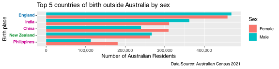
Notice that the countries are colored by their continent (Europe, Asia, and Oceania).
Law of Closure
- Objects collected within a boundary-like structure are perceived as a group.
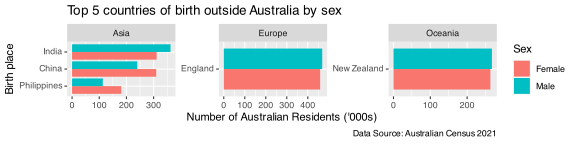
Color space
Zeileis, Fisher, Hornik, Ihaka, McWhite, Murrell, Stauffer, Wilke (2019). colorspace: A Toolbox for Manipulating and Assessing Colors and Palettes. arXiv 1903.06490
Zeileis, Hornik, Murrell (2009). Escaping RGBland: Selecting Colors for Statistical Graphics. Computational Statistics & Data Analysis 53(9) 3259-3270
Qualitative palettes
- Designed for categorical variable with no particular ordering
Sequential palettes
- Designed for ordered categorical variable or number going from low to high (or vice-versa)
Diverging palettes
- Designed for ordered categorical variable or number going from low to high (or vice-versa) with a neutral value in between
Colorblindness
Colorblindness affect roughly 1 in 8 men.
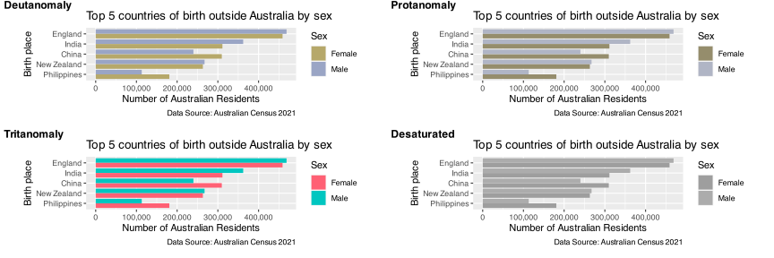Check your color choices using the colorblindr package or otherwise.
Week 6 Lesson
Summary
- We went some examples of constructing data plots to illustrate your data story
- We looked at some plot types and elementary perceptual tasks
- We examined the empirical results of the information retrieval from elementary perceptual tasks
- We studied at some cognitive concepts, like preattentive processing and Gestalt principles, for data visualisation
- We saw the different types of color palettes and considered color choices for colorblind audiences
Week 6 Lesson

ETC5523 Week 6